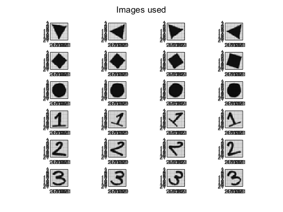
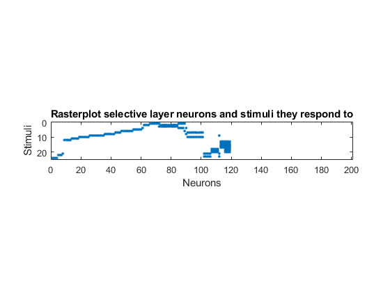
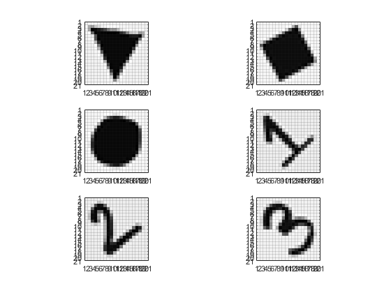
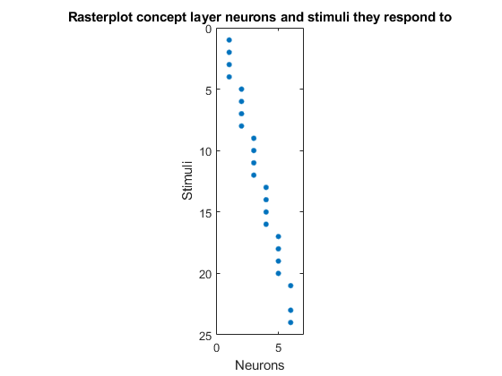

Script for testing association: raw images
Contents
Prepare enviroment
clear
close all
rng(3)
path(path,'MatFunc\Simulate')
path(path,'MatFunc\Patterns')
path(path,'MatFunc\Accuracy')
path(path,'MatFunc\Vision')
n = 20*20;
A = 6;
M = 200;
L = 24;
p = zeros(20,20,L);
s = zeros(n,L);
Figures = ["Triangle", "Square", "Circle", "One", "Two", "Three"];
idx = 1;
clf
for i=1:6
for j=1:4
Img = imread(strcat(Figures(i),int2str(j),'.jpeg'));
p(:,:,idx) = imbox(Img,0,i-1);
subplot(L/4,4,idx)
showPattern(p(:,:,idx));
p(:,:,idx) = p(:,:,idx)/norm(p(:,:,idx));
aux = p(:,:,idx)';
s(:,idx) = aux(:);
idx = idx + 1;
end
end
sgtitle("Images used");
psl = 0.95;
Th = sqrt(3)*0.5;
pcn = 0.95;
Thcn = 0.5;
alpha = 20;
Tmax = 400;
f = @(t) mod(round(t),L)+1;
K = 4;
g = @(t) mod(round(t),L)+1-mod(round(t),K):mod(round(t),L)+1;
delta = sqrt(1 - (2*norminv(psl) / sqrt(5*n)));
b2 = (Th/delta)^2;
bcn2 = (Thcn*sqrt(L)*delta*K*gamma(K + 0.5) / ...
(Th*(1-pcn)*(1-delta)*factorial(K-1)*sqrt(M)))^2;
W0 = 2*rand(n,M) - 1;
[~,id] = sort(sum(s'*W0 > Th));
W0 = W0(:,id);

Do simulations with Option D. Selective layer
h = 0.005;
d = 150;
W = SimulateNeurons4(Tmax, h, W0, s, f, alpha, b2, Th, d);
figure;
V = W'*s;
F = V > Th;
R = orderRasterPlot(F');
spy(R);
title("Rasterplot selective layer neurons and stimuli they respond to");
xlabel("Neurons");
ylabel("Stimuli");

Do simulations. Concept layer
y = max(0,W'*s - Th);
y = [y; y; y; y];
U = zeros(M*4,A);
Thcn = zeros(A,1);
for i=0:A-1
aux = sum(y(:,i*K+1:i*K+K),2);
U(:,i+1) = aux/norm(aux);
v = U(:,i+1)'*y(:,i*K+1:i*K+K);
Thcn(i+1) = min(v(v~=0));
end
Test accuracy
p = zeros(20,20,5);
s2 = zeros(n,5);
Figures2 = ["Triangle5", "Square5", "Circle5", "One5", "Two5", "Three5"];
figure;
for i=1:6
Img = imread(strcat(Figures2(i),'.jpeg'));
p(:,:,i) = imbox(Img,0,i-1);
subplot(3,2,i)
showPattern(p(:,:,i));
p(:,:,i) = p(:,:,i)/norm(p(:,:,i));
aux = p(:,:,i)';
s2(:,i) = aux(:);
end
V2 = W'*s2;
y2 = max(0,V2 - Th);
Vc2 = U'*[y2;y2;y2;y2]
F3 = Vc2 >= Thcn
Vc2 =
0.2110 0 0 0 0.0025 0
0 0.3683 0.0743 0 0 0
0 0.0819 0.2689 0 0 0
0 0 0 0.0982 0.0651 0
0 0 0 0.0887 0.1038 0
0 0 0 0.0253 0.0187 0.1412
F3 =
6×6 logical array
1 0 0 0 0 0
0 1 0 0 0 0
0 0 1 0 0 0
0 0 0 0 0 0
0 0 0 0 0 0
0 0 0 0 0 0

Plot concept raster
V = U'*y;
F = V >= Thcn;
figure
spy(F');
title("Rasterplot concept layer neurons and stimuli they respond to");
xlabel("Neurons");
ylabel("Stimuli");
